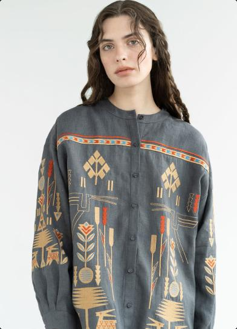

<section class="hero" id="hero">
    <div class="container ukrainian-style-container">
        <div class="ukrainian-style">
            <div class="ukrainian-style-box">
                <h1 class="ukrainian-style-title">Reviving the traditional <span class="ukr-title">Ukrainian</span>
                    artistry
                    in every stitch.</h1>
                <a class="ukrainian-style-button" href="#order">
                    Order
                    <svg class="icon-arrow" width="26" height="10">
                        <use href="../img/sprite.svg#icon-arrow">
                        </use>
                    </svg>
                </a>
            </div>
            <picture>
                <!-- Desktop screen -->
                <source media="(min-width: 1280px)"
                    srcset="../img/hero-img/girl-laptop.jpg 1x, ../img/hero-img/girl-laptop@2x.jpg 2x"
                    type="image/jpg" />
                <!-- Tablet screen -->
                <source media="(min-width: 768px)"
                    srcset="../img/hero-img/girl-tablet.jpg 1x, ../img/hero-img/girl-tablet@2x.jpg 2x"
                    type="image/jpg" />
                <!-- Mobile screen -->
                <source media="(max-width: 767px)"
                    srcset="../img/hero-img/girl-mobile.jpg 1x, ../img/hero-img/girl-mobile@2x.jpg 2x"
                    type="image/jpg" />
                
            </picture>
        </div>

        <div class="ukrainian-embroidery">
            <div class="ukrainian-embroidery-box">
                <svg class="icon-star" width="52" height="51">
                    <use href="./img/sprite.svg#icon-star"></use>
                </svg>
                <p class="ukrainian-embroidery-text">all embroidery is made by hand</p>
            </div>
            <div class="oval">
                <picture>
                    <!-- Desktop screen -->
                    <source media="(min-width: 1280px)"
                        srcset="../img/hero-img/vyshyvanka-laptop.png 1x, ../img/hero-img/vyshyvanka-laptop@2x.png 2x"
                        type="image/jpg" />
                    <!-- Tablet screen -->
                    <source media="(min-width: 768px)"
                        srcset="../img/hero-img/vyshyvanka-tablet.png 1x, ../img/hero-img/vyshyvanka-tablet@2x.png 2x"
                        type="image/jpg" />
                    
                </picture>
            </div>
        </div>
    </div>
</section>